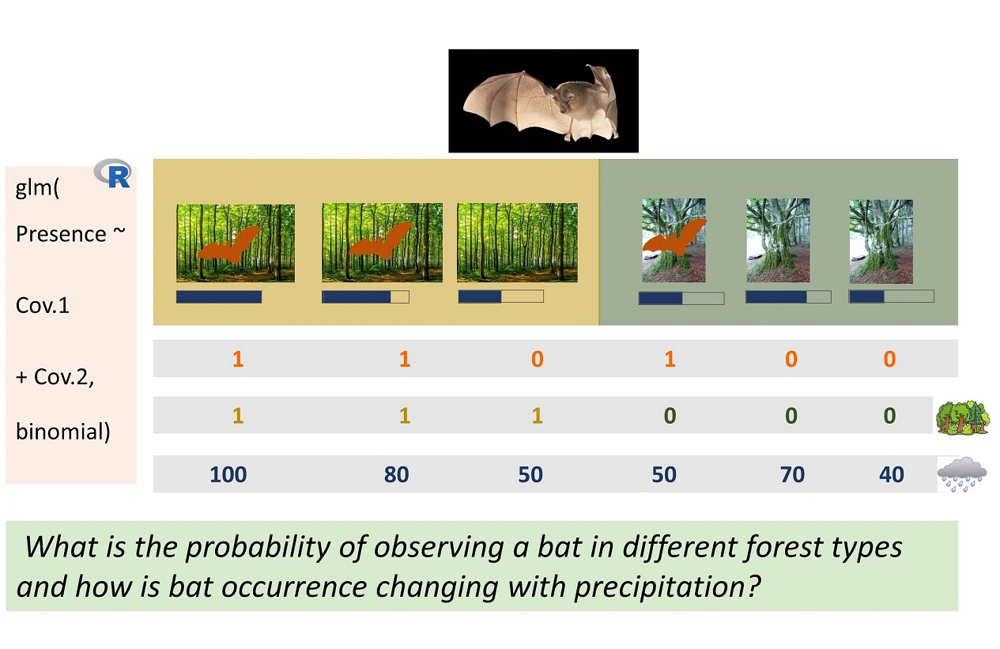
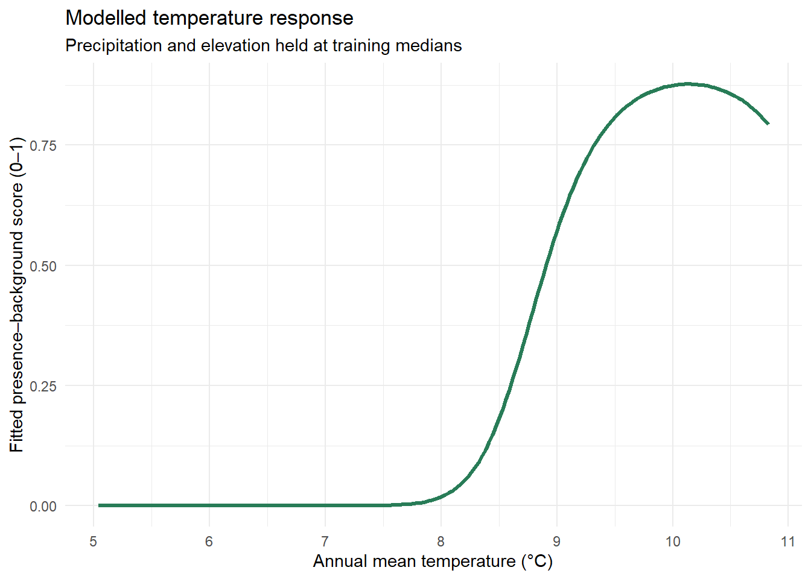
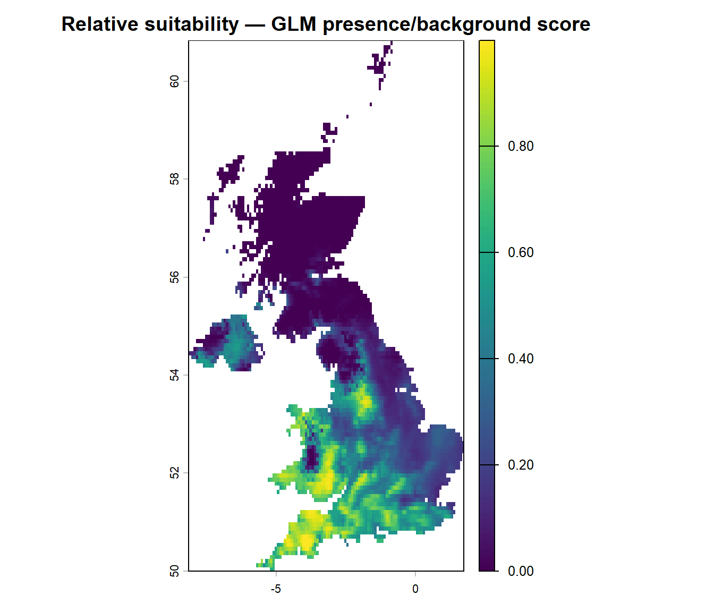

Fitting your first species distribution model - GLMs
Understanding and interpreting generalised linear models (GLMs)
From ecological observations to a model
We now fit our first species distribution model (SDM). In the preceding chapters, we inspected species records, selected background locations, and associated both sets of locations with environmental predictors. Here, we will use a generalised linear model (GLM) to investigate relationships between the occurrence records of the lesser horseshoe bat (Rhinolophus hipposideros) and environmental conditions across the UK.
Binomial generalised linear models (GLMs), fitted using logistic regression, are widely used in species distribution modelling because they provide a relatively simple and interpretable way to relate a binary response variable—coded as 1 for species presence and 0 for absence—to environmental conditions. In this chapter, we use binomialGLMs to explore the principles of multiple regression, examine how different environmental predictors contribute to a model, and consider why careful variable selection is important for producing ecologically meaningful and interpretable results.
TipLearning outcomes
By the end of the core practical, you should be able to:
Explain the difference between a binary training label and confirmed species absence.
Fit a binomial GLM using glm() and inspect its main results.
Compare a straight-line and a curved response to elevation.
Extend a GLM to temperature, precipitation and elevation.
Interpret a map of relative presence–background suitability scores, without treating it as a map of confirmed occupancy probabilities.
Explain why training data and held-out test data have different purposes.
Optional research activities explore predictor correlations, model complexity, AIC and residual checks. The next chapter covers formal model assessment and projection.
Start in your own RStudio project
Keep adding the code and your own explanatory comments to the R script you created for the workshop. If you just completed Background and Pseudo-Absence Data, the objects sdm_df_clean and proj_stack should already be available in your R session.
To make this page work independently, the workshop also provides a short recovery script that reproduces the same data-cleaning, predictor-alignment and random-background choices as Chapter 5. It does not download files or fit models. This avoids unexpectedly replacing the dataset that you constructed yourself.
library(ggplot2)library(terra)# If the two objects are unavailable, reproduce the Chapter 5# CORE data preparation using the supplied files.# This does not replace the code in your own annotated script.has_model_data <-exists("sdm_df_clean", inherits =FALSE)has_predictors <-exists("proj_stack", inherits =FALSE)if (!has_model_data ||!has_predictors) {message("Preparing the standard Chapter 5 teaching inputs. ","If you changed the background-sampling design, ","rerun your own Chapter 5 code instead.")source("scripts/prepare_glm_inputs.R")}# Check the inputs that will be used for the first modelmodel_predictors <-c("bio_1", "bio_12", "elevation")stopifnot(is.data.frame(sdm_df_clean),all(c("pa", model_predictors) %in%names(sdm_df_clean)),all(model_predictors %in%names(proj_stack)),all(stats::complete.cases(sdm_df_clean[, c("pa", model_predictors)])),inherits(proj_stack, "SpatRaster"))# Safely convert 0/1 labels, even if a previous exercise made a factor.pa_numeric <-suppressWarnings(as.integer(as.character(sdm_df_clean$pa)))stopifnot(!anyNA(pa_numeric), all(pa_numeric %in%c(0L, 1L)))sdm_df_clean$pa <- pa_numerictable(sdm_df_clean$pa)
0 1
309 309
summary(sdm_df_clean[, model_predictors])
bio_1 bio_12 elevation
Min. : 5.043 Min. : 530 Min. : 1.21
1st Qu.: 8.440 1st Qu.: 764 1st Qu.: 82.72
Median : 9.256 Median : 957 Median :137.20
Mean : 9.014 Mean :1061 Mean :165.22
3rd Qu.: 9.727 3rd Qu.:1276 3rd Qu.:223.54
Max. :10.828 Max. :2779 Max. :622.48
The recovery script reproduces the Chapter 5 teaching using the supplied data, fixed background-sampling seed (2222) and the same coordinate-cleaning choices. If you changed the sampling region, background method or cleaning decisions, rerun those steps from your own annotated R script rather than using the standard recovery script. This also lets you reproduce your modified analysis after restarting R.
NoteWhat is in the model data?
sdm_df_clean is a table containing:
Column
Meaning
pa = 1
Recorded presence of the focal species
pa = 0
Sampled background location, not a confirmed absence
bio_1
Annual mean temperature (°C)
bio_12
Annual precipitation (mm)
elevation
Elevation (m)
proj_stack is a three-layer raster with the same predictor names. We will later apply the fitted model to each grid cell using these layers.
Note: Because the background points have artificially assigned zero labels, the GLM’s fitted numbers are not automatically the absolute probability that a bat occurs at a given location. They are scores representing the contrast between the supplied presence and background samples. Their values depend on the sampling design and presence–background ratio.
1. Reserve data for model assessment
Core practical. Before fitting the GLMs, we will set aside some records for later evaluation. This helps avoid presenting model performance measured on the same observations that were used to fit it.
For a first teaching example, we use a 70% training / 30% test split, retaining records from both labelled groups. The test observations will not be used to choose the model formula or fit its coefficients.
set.seed(2026)presence_rows <-which(sdm_df_clean$pa ==1L)background_rows <-which(sdm_df_clean$pa ==0L)stopifnot(length(presence_rows) >=5L,length(background_rows) >=5L)trainIndex <-sort(c(sample(presence_rows, floor(0.7*length(presence_rows))),sample(background_rows, floor(0.7*length(background_rows)))))sdm_df_train <- sdm_df_clean[trainIndex, , drop =FALSE]sdm_df_test <- sdm_df_clean[-trainIndex, , drop =FALSE]# Compare the numbers of presence/background labels in both subsetstable(Training = sdm_df_train$pa)
Training
0 1
216 216
table(Test = sdm_df_test$pa)
Test
0 1
93 93
Inspect: Which subset is used for fitting models? Why should you avoid repeatedly checking the test results and then altering the model to improve them?
Research connection: Random splitting is easy to demonstrate but does not account for spatial autocorrelation or neighbouring observations that share environmental conditions. Independent SDM research should assess whether spatially separated validation is appropriate. We return to this in Assessment and Projection.
2. Fit a first GLM with elevation
2.1 What is logistic regression?
A binomial GLM models a binary response using a mathematical transformation called the logit link. A simple model has the form:
[ () = _0 + _1,. ]
Here, (p) is the model’s fitted probability of the training labelpa = 1, given the particular presence–background sampling design. In our example, it must not be described as the species’ true occupancy probability.
The fitted intercept describes the log-odds at elevation zero. The slope describes how the log-odds change with elevation; neither coefficient is directly an ordinary probability.

Conceptual illustration of bat observations and environmental predictors. This is a schematic teaching illustration, not the workshop’s actual survey design.
glm_elev <-glm( pa ~ elevation,data = sdm_df_train,family =binomial(link ="logit"))summary(glm_elev)
Call:
glm(formula = pa ~ elevation, family = binomial(link = "logit"),
data = sdm_df_train)
Coefficients:
Estimate Std. Error z value Pr(>|z|)
(Intercept) 0.0563937 0.1674901 0.337 0.736
elevation -0.0003363 0.0008175 -0.411 0.681
(Dispersion parameter for binomial family taken to be 1)
Null deviance: 598.88 on 431 degrees of freedom
Residual deviance: 598.71 on 430 degrees of freedom
AIC: 602.71
Number of Fisher Scoring iterations: 3
# Convert the fitted log-odds to a 0–1 response scorestats::plogis(coef(glm_elev)["(Intercept)"])
(Intercept)
0.5140947
# Odds ratio for a 100-m increase in elevation, conditional on the# sampled presence/background labels (not population occupancy odds)exp(100*coef(glm_elev)["elevation"])
elevation
0.9669322
Inspect: Is the elevation coefficient positive or negative? What does the odds ratio for a 100-m elevation change suggest about the sampled contrast between presences and background locations? Does it establish that elevation causes the observed distribution?
NoteGLM refresher: Understanding predictions from a binomial GLM
When we fit a binomial GLM with a logit link (family = binomial(link = "logit")), we are using logistic regression. The model estimates how the response changes in relation to an environmental predictor, such as elevation. The fitted coefficients describe this relationship on the log-odds scale.
Using predict() with type = "response" converts the model’s predictions into values between 0 and 1. By calculating these predictions across a range of elevation values, we can draw a response curve showing how the fitted relationship changes along the environmental gradient.
In our workshop, we compare species presence records (pa = 1) with randomly selected background locations (pa = 0), rather than confirmed absences. Therefore, the predicted values should be interpreted as relative presence–background suitability scores, not as the actual probability that the species occurs at a particular location.
The model intercept represents the fitted log-odds when elevation equals 0 m. If this is not representative of the sampled locations, we can centre elevation around its mean to make the intercept easier to interpret.
2.2 Plot the fitted elevation response
Visualising the fitted response helps connect an R model to an ecological question. Here, the horizontal axis is elevation and the vertical axis is the fitted presence–background score.
Change: Substitute bio_1 for elevation in the glm() formula. Create a new prediction grid for temperature. What differs in the direction and shape of the response? Remember to save the new model under a different name so you do not overwrite glm_elev.
3. Could the response be curved?
Many ecological relationships are not straight lines. A quadratic term allows a GLM to fit a curved response, although the resulting curve is not necessarily hump-shaped—its shape depends on the data and fitted coefficients.
glm_elev_poly <-glm( pa ~poly(elevation, 2),data = sdm_df_train,family =binomial(link ="logit"))elev_seq$score_quadratic <-predict( glm_elev_poly, newdata = elev_seq, type ="response")# AIC compares training-set fit while penalising additional parameters.AIC(glm_elev, glm_elev_poly)
Inspect: Does the quadratic model actually turn downward at higher elevations? Does the model predict an optimum within the observed range? Compare the AIC values but also consider whether the shape is ecologically plausible.
Change: Try a quadratic temperature response instead. Does the curve imply an environmental optimum? How might a biased presence sample create a misleading apparent optimum?
NoteWhat does poly(x, 2) mean?
poly(x, 2) fits a quadratic relationship using orthogonal polynomial terms. This can improve numerical behaviour, but its coefficient values are not as easy to interpret directly as the coefficients in x + I(x^2).
For this practical, focus on the predicted response curve, not on interpreting each polynomial coefficient separately. A lower training AIC is not proof that a model predicts new locations better.
4. Fit a GLM with temperature, precipitation and elevation
Core practical. A species may respond to several ecological factors together. We now extend the example to the three environmental predictors prepared in the preceding chapters: bio_1 (annual mean temperature), bio_12 (annual precipitation) and elevation.
These three variables are used to keep the exercises manageable; they are not presented as an automatically optimal predictor set for lesser horseshoe bats or for other species.
4.1 Inspect predictor relationships
Check correlations in the training subset before fitting or selecting model formulas. Correlation does not prove that two predictors measure the same ecological mechanism.
predictor_cor <- stats::cor( sdm_df_train[, model_predictors, drop =FALSE])round(predictor_cor, 2)
Inspect: Which pair is most strongly correlated? If elevation and temperature are associated, what might happen when both enter the GLM? Should ecological relevance or the numerical correlation alone determine predictor choice?
4.2 Fit multivariable GLMs
We fit a model with three linear terms, then a model that allows each environmental response to curve. Both models are fitted to the same training data.
Inspect: How do the number of coefficients and AIC values change? Can the models identify causal environmental drivers, or only statistical patterns in the available data?
Research connection: Correlated predictors, overfitting, temporal mismatches and observer bias can all affect the fitted response. If you change the sampling region, background points or predictor set, you may obtain a different model even with the same algorithm.
4.3 Visualise one fitted environmental response
To show how the multivariable model responds to temperature, we vary bio_1 while holding precipitation and elevation at their training-data median values. This is a model-based illustration, not a controlled experiment and not a causal effect estimate.
temperature_grid <-data.frame(bio_1 =seq(min(sdm_df_train$bio_1),max(sdm_df_train$bio_1), length.out =200),bio_12 =median(sdm_df_train$bio_12),elevation =median(sdm_df_train$elevation))temperature_grid$score <-predict( glm_multi, newdata = temperature_grid, type ="response")ggplot(temperature_grid, aes(x = bio_1, y = score)) +geom_line(colour ="#287c57", linewidth =1.1) +labs(title ="Modelled temperature response",subtitle ="Precipitation and elevation held at training medians",x ="Annual mean temperature (°C)",y ="Fitted presence–background score (0–1)") +theme_minimal()

Change: Replace bio_1 with bio_12 as the varying predictor and keep the other two predictors constant. Describe how the response changes.
5. Map the model’s predicted scores
The environmental data prepared in Chapter 4 contain the same three predictor names used by the GLM. We can now apply the fitted model to those rasters, estimating a value for each cell with complete environmental data. This is spatial prediction; it does not, by itself, demonstrate how well the model predicts new observations.
stopifnot(all(model_predictors %in%names(proj_stack)))# Predict from the training-fitted model on the current climate grid.glm_suitability_map <- terra::predict( proj_stack, glm_multi, type ="response", na.rm =TRUE)names(glm_suitability_map) <-"relative_suitability"plot(glm_suitability_map,main ="Relative suitability — GLM presence/background score")

Inspect: Do the areas with higher fitted scores correspond to locations where the sampled environments resemble those associated with recorded presences? Why might high suitability appear in places with few or no records?
Important: The map is conditional on the study region, background-sampling procedure, occurrence-data quality, climate baseline and fitted model. It is not a map of verified occupancy, population abundance, or future colonisation.
NoteInterpreting suitability maps
The colour gradient represents variation in a modelled presence-versus-background score. Its numbers lie between 0 and 1 because of the inverse-logit transformation, not because the sampled data establish the true probability of species occurrence in each cell.
To assess whether the model generalises, we need to compare predictions against observations not used for fitting. We will do this in the Assessment and Projection chapter. Spatially separated evaluation may be needed to investigate transferability beyond sampled locations.
6. Model checks and research extensions
6.1 Inspect training-fit summaries
Deviance and AIC describe aspects of model fit, but they are not substitutes for independent predictive assessment. McFadden’s pseudo-(R^2) is one descriptive measure based on the improvement over an intercept-only model; it should not be interpreted like the ordinary least-squares (R^2).
TipResearch extension: inspect residuals and model complexity
More complex models can reproduce patterns in the training sample without necessarily generalising. Inspect residuals and compare ecologically motivated formulas before making conclusions.
# Optional diagnostic views: not required for the core PC lab.plot(glm_multi, which =c(1, 2))# AIC-based stepwise selection is an exploratory procedure,# not a substitute for ecological predictor selection or validation.glm_step <- stats::step(glm_multi, direction ="both", trace =FALSE)summary(glm_step)
If you explore stepwise selection, perform it using training data only, describe your selection process and avoid repeatedly tuning decisions against the held-out test set. For independent research, consider spatial validation and quantify sensitivity to alternative model specifications.
TipFurther research: a small logistic regression demonstration
An intercept-only binomial GLM is a useful way to see how the logit works, independent of the ecological example.
set.seed(42)y <-rbinom(100, size =1, prob =0.2)intercept_model <-glm(y ~1, family =binomial())mean(y)stats::plogis(coef(intercept_model))
How does the observed fraction of 1 labels compare with the fitted value? Why is this more directly interpretable as an event probability than the labels assigned to our background locations?
TipOptional: save your GLM work for the next chapter
You can save the fitted model and the training/test data to revisit them later without fitting the GLM again. The corresponding environmental raster is saved separately as a GeoTIFF. These are checkpoints, not replacements for the code in your own R script.
dir.create("data/checkpoints", recursive =TRUE,showWarnings =FALSE)saveRDS(list(sdm_df_train = sdm_df_train,sdm_df_test = sdm_df_test,glm_multi_1 = glm_multi_1,glm_multi = glm_multi,model_predictors = model_predictors ),"data/checkpoints/glm_chapter6_results.rds")terra::writeRaster( proj_stack,"data/checkpoints/SDM_predictors_current.tif",overwrite =TRUE)# In a later R session, after loading the required packages:# glm_results <- readRDS("data/checkpoints/glm_chapter6_results.rds")# sdm_df_test <- glm_results$sdm_df_test# glm_multi <- glm_results$glm_multi# proj_stack <- terra::rast("data/checkpoints/SDM_predictors_current.tif")
The held-out test observations remain unused for model fitting. In the next chapter, we will apply the trained model to those observations to assess discrimination. This random split is a first demonstration, not a substitute for spatially separated validation in independent research.
7. Practise, interpret and extend
NoteCore practical — before moving to assessment
Fit the elevation-only GLM and explain the sign of its coefficient in your own R script.
Compare straight and curved elevation responses. Which curve better represents the observed training data? Is the more flexible curve necessarily preferable?
Fit the three-predictor GLM and plot its relative-suitability map.
Explain why the fitted scores are not confirmed occupancy probabilities and why the test subset has not been used to choose the model.
Optional research extensions
Compare one or more ecologically defensible GLM formulas using training data only.
Inspect how predictor correlation and the choice of background locations change the fitted responses.
Refit a model after centering or scaling predictors; compare prediction curves and coefficient interpretation.
Plan a spatially blocked validation scheme for a research dataset with clustered occurrences, keeping model tuning separate from final assessment.
Next: Continue to Assessment and Projection to check held-out model performance, interpret limitations and investigate transferring predictions to other environmental conditions.